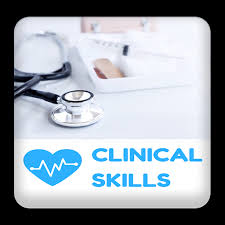
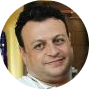

Dependable Emergency medicine physician with 13 years of experience working in emergency medicine departments, managing emergency cases,
participating in teaching and training of emergency medicine trainee and residents and working as one of emergency family and team.
Emergency medicine consultant in Egypt,KSA and UAE
Ahmed Ramadan
About me
Who am I?
Membership of Royal college of emergency medicineJune 2015
Arab board certificate in Emergency medicine January 2015
Egyptian Board ,Emergency medicine 2009
Banha faculty of medicine, Diploma in Cardiology, 2008
Arab board certificate in Emergency medicine January 2015
Egyptian Board ,Emergency medicine 2009
Banha faculty of medicine, Diploma in Cardiology, 2008
Postgraduate
Education&certificates
2006-2009 Resident and Trainee in Ahmed Maher teaching hospital (Egyptian Board of emergency medicine program), Cairo, Egypt
June 2010-February 2011 Registrar and director of emergency department in Al Jazeera hospital, KSA
March 2011-May 2019 ED registrar at King Abdul-Aziz university hospital in Jeddah, KSA
June 2019-August 2020 ED specialist at AlAin Hospital (SEHA),UAE
1st September 2020-to-date ED specialist at Tawam Hospital (SEHA),UAE
June 2010-February 2011 Registrar and director of emergency department in Al Jazeera hospital, KSA
March 2011-May 2019 ED registrar at King Abdul-Aziz university hospital in Jeddah, KSA
June 2019-August 2020 ED specialist at AlAin Hospital (SEHA),UAE
1st September 2020-to-date ED specialist at Tawam Hospital (SEHA),UAE
Experiences
Jobs&Experiences

• Advanced life support 🚑
• Trauma life support
• Emergency ultrasound (POCUS)
• Pediatric advanced life support
• Airway management basic and advanced
• Cricothyrotomy
• IV line access
• IO line access
• CV line insertion
• Chest tube insertion
• Immobilization and splinting
• Mechanical ventilation
• Patient transportation
• Paracentesis
• Pericardiocentesis
• Thoracocentesis
• Using the defibrillator
• Wound care and stitching
• Other emergency skills needed to manage critical ill patient and ED flow.
Clinical skills
Medical Skills


The medical speciality concerned with the care of illnesses or injuries requiring immediate medical attention
ahmedramadan122@hotmail.com +971 507522425

My name is Ahmed Ramadan, I'm qualified emergency medicine physician
Contact me